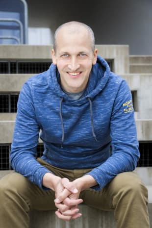

Stephan Pötschner
Django-Entwickler in Wien,
selbständig seit 2008
Kostenlos. Ich melde mich meist am selben Tag.
Skalieren, modernisieren, von einem anderen Team übernehmen. Zum Beispiel careesma.at mit über 200.000 Besuchern im Monat.
Vom ersten Prototyp zum Produkt, das Kunden nutzen. Zum Beispiel Offensity.
Bei E.GON im Backend-Team mitverantwortlich für Architektur und Design, bei tiga.eleven als Lead Developer.
Ich schreibe Software so, dass dein Team sie versteht und weiterführen kann.
Wenn Standardsoftware dein Problem besser löst als eine Eigenentwicklung, sage ich dir das – auch wenn ich dann weniger zu tun habe.
Bevor ich etwas baue, will ich verstehen, wofür.
Es wäre schwierig, einen anderen Entwickler mit ähnlich tiefem Fach- und Spezialwissen, dem gleichen Ausmaß an Eigenverantwortung oder derart gutem Geschäftssinn zu finden.
Stephan deckt diese Bereiche hervorragend ab und hat mit seinem Team ein Produkt geschaffen, auf das wir stolz sind.
Stephan exceeded my expectations about how fast he managed to fit as a team-member and the degree of autonomy and loyalty he showed.